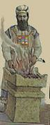

882 (pagination follows the Birnbaum machzor)
The ark is opened.
Reader and Congregation:
BEFORE JEWISH PEOPLE GROUP-WANDER DESERT. HAVE A-R-K GOLD (2h)B-CL'box', GOLD (2h)F-CL'staves perpendicular to body'. PEOPLE FOUR (2h)1-CL'@ each corner' (2h)S-CL'bear on shoulder' CARRY'forward'. EACH TIME JEWISH PEOPLE GROUP-MOVE-FORWARD, MOSES SAY, 90 L-RD YOUR ENEMY G-D-FORCE-ctr SCATTER. IF THEY-ctr HATE-G-D G-D-FORCE-ctr ESCAPE"each'. = TORAH ITS-WAY TEMPLE SHOW"all" WORLD. HIS LAW, JERUSALEM TEACH"each". WE PRAISE YOU. WHY? TORAH, YOU GIVE-us US JEWISH, YOUR SPECIAL PEOPLE, HELP-us BECOME HOLY. (CONTINUE PRAY TALK-TO-SELF)
. . . HIMSELF ME TRUST. HIS HOLY NAME SHINY, ME PRAISE WILL. G-D WILLING MY HEART-OPEN UNDERSTAND TORAH, PLUS SUCCEED WHAT I WISH INSIDE-SELF me-SAME-AS-them (2h)#ALL YOUR JEWISH PEOPLE. FROM-NOW-ON HAPPY, LIFE TAKE-OFF, HAVE PEACE. .
Reader:
ANNOUNCE TOGETHER ME, L-RD HIMSELF WONDERFUL. HIS-G-D's NAME ADVANCED, (2h)#ALL AGREE.
884
Congregation:
(1) STRENGTH, (2) BEAUTY, (3) NAME SHINY, (4) VICTORY, (5) CONTROL, #ALL-FIVE-ON-LIST YOURS, L-RD. WHY? YOU (<) MAKE HEAVEN, (>) MAKE EARTH. POWER PLUS AUTHORITY YOURS, L-RD. OUR G-D ADVANCED. ENTER HIS TEMPLE, BOW-DOWN-TO-G-D HERE EARTH, HIMSELF HOLY. . . . . .
The Torah is placed on the desk. The reader unrolls it and says:
PLEASE G-D HELP, PROTECT, SAVE PEOPLE THEMSELVES TRUST YOU. #ALL-OF-YOU SAY, AMEN. ANNOUNCE OUR G-D HIMSELF WONDERFUL* PLUS RESPECT-scroll TORAH MUST. COHEN PLEASE 1-CL'approach reading desk'. (NAME 'spell name', or COHEN HAVE-NONE.) WE PRAISE-G-D WHY? TORAH, HIMSELF GIVE JEWISH PEOPLE BECOME HOLY.
Congregation and Reader:
IF YOU"all" CHERISH L-RD YOUR G-D, LIVE JUST-RIGHT WILL.
The person called to the Torah recites:
ADMIT-TO-G-D L-RD, WE NEED PRAISE-G-D HIM.
Congregation responds:
WE WILL PRAISE-G-D L-RD FROM-NOW-ON FOREVER.
He repeats the response and continues:
WE PRAISE YOU L-RD OUR G-D. YOURSELF RULE WORLD~GENERAL IDEA~LIKE KING. COUNTRY VARIOUS, YOU PICK US. GIVE-us TORAH. WE PRAISE-G-D. WHY? YOU GIVE-us TORAH.
The Torah is read; then he recites:
WE PRAISE YOU L-RD OUR G-D. YOURSELF RULE WORLD~GENERAL IDEA~LIKE KING. YOU TEACH-us WAY LIVE RIGHT*. OUR PEOPLE CONTINUE FOREVER CAN. WE PRAISE-G-D. WHY? YOU GIVE-us TORAH.
888
When the Torah is raised, the Congregation recites:
L-RD COMMAND-lf MOSES TEACH JEWISH PEOPLE TORAH, HAND-DOWN'bit by bit'. TORAH IDEA~LIKE TREE. (<) (2h)alt.C-CL'pick fruit from rt and eat' LIVE TAKE-OFF, (>) ITS-rt BLOSSOM, BEAUTIFUL, SATISFIED. IF WE FOLLOW HIS-G-d's LAW, LIVE SMOOTH, PEACE. PLUS LIVE LONG, BECOME RICH, PEOPLE HONOR-us US WILL. L-RD REALLY WANT US REALIZE MORE-AND-MORE (<) TORAH RIGHT*, (>) AUTHORITY CLEAR.
890
The Maftir now chants the Haftarah:
WE PRAISE-god YOU L-RD, OUR G-D, IDEA~LIKE KING RULE WORLD~GENERAL. WHY? YOU (2h)alt.PICK PROPHET TRUST CAN. PROPHET INFORM"all" TRUTH, YOU CHERISH. WE PRAISE-G-d YOU L-RD. (1-OF-4) TORAH, (2-OF-4) MOSES, (3-OF-4) JEWISH PEOPLE, (4-OF-4) PROPHET, #ALL-4-ON-LIST (<) SPEAK TRUTH, (>) RIGHT*. INDEX-LIST-OF-4, YOU CHERISH.
896
L-RD, OUR G-D, IDEA~LIKE KING CONTROL WORLD~GENERAL, WE PRAISE YOU. WHY? YOU FOUNDATION FOREVER. PEOPLE PASS-DOWN, WILLING HELP'each generation' YOU. IF YOU PROMISE, WE TRUST-G-d YOU SUCCEED. G-D G-d-COMMAND-ctr, CAUSE HAPPEN. EVERYTHING HE SAY (<) TRUE~WORK, (>) RIGHT*.
YOU PROMISE, WE TRUST-G-d YOU PROCEED DO. APPROPRIATE TRUST-G-d G-D. KING G-d-HAVE-MERCY WILL. L-RD, WE PRAISE-G-d YOU. WHY? EVERYTHING YOU SAY, WE TRUST CAN.
L-RD, OUR G-D, WE PRAISE-G-d YOU LIKE OUR GRANDFATHER~LONG-AGO (1) ABRAHAM, (2) ISAAC, (3) J-A-C-O-B , INDEX-LIST-OF-3 PRAISE-G-d YOU. YOURSELF-G-d STRONG*, ADVANCED*, WONDERFUL*. WORLD~GENERAL, YOU CONTROL. EVERYTHING GOOD, YOU (2h)alt.GIFT"each". INDEX-LIST-OF-3, INTERNALIZE YOUR LAW, MEAN JEWISH PEOPLE HAVE RIGHT YOU G-d-SEND-us MESSIAH SAVE US.
(<) PEOPLE WISE ABOUT TORAH, TEACH-me SECRET. (>) PEOPLE GENIUS JEWISH LAW, I COPY-FROM-rt. NOW I HOPE I READY LEAD PRAY RIGHT. NOW TIME* CONFRONT-G-d KING TOP. G-d-HIMSELF FULL G-d-HAVE-MERCY-ON-us, EXCUSE US, SIN DISSOLVE. . . .
REMEMBER G-d-HELP-us US LIVE. IDEA~LIKE KING, YOU (2h)CHERISH LIFE. PUT-DOWN OUR NAME, OPEN-large-BOOK, LIST-NAMES'lf hand holds book'. FOR-FOR? LIVE LONG~TIME'lalala'. G-d-HELP-us, PROTECT, SAVE US, IDEA~LIKE KING. L-RD, WE PRAISE YOU. WHY? JEWISH PEOPLE, YOU PROTECT"over time". VERY-FIRST WHO? ABRAHAM.
426
SUPPOSE SOMEONE DIE. YOU G-d-SUMMON, - GET-UP LIVE. = POWER YOURS+ CONTINUE FOREVER. YOU G-d-HELP-ctr LIVE CONTINUE. SOMEONE DIE, YOU HAVE-MERCY-ON-ctr. 8 (2h)COME-ON, GET-UP, LIVE FOREVER CAN. (<) SOMEONE FAIL, YOU SUPPORT. (>) SOMEONE SICK, YOU HELP RECOVER. (<) OPPRESSION, YOU OFF-OPPRESSION. (>) SOMEONE B ,U-CL'lowered into grave' GRAVE, CAN TRUST YOU HELP-ctr. WHO HAVE POWER LIKE YOU WHO? IDEA~LIKE KING, (<) BLAME RIGHT, PROCEED KILL, (UO>) BLAME WRONG, ALLOW LIFE. SAVE, YOURS+. WHO WILLING HAVE-MERCY LIKE YOU? EVERYTHING LIVE, DEPEND++-G-d. . . .
REMEMBER G-d-HELP"each". PEOPLE DIE, WE TRUST YOU SUMMON LIVE FOREVER. WE PRAISE YOU. WHY? YOU SUMMON LIVE FOREVER. . . .
YOU HOLY. YOUR NAME HOLY. EVERYDAY ANGEL HOLY SCADS-OF PRAISE-G-d YOU.
428
THEREFORE L-RD, OUR G-D, TEACH -us US UNDERSTAND WORLD~GENERAL. SHOW-us HOW RESPECT-G-d. HAPPEN? (2h)#ALL REALIZE YOU G-D, BOW-DOWN-TO-G-d. (2h)#ALL YOUR CHILDREN COOPERATE FOLLOW YOUR LAW, THEIR-ctr HEART PERFECT. WHY? L-RD, OUR G-D, WE KNOW-THAT (<) POWER, (>) AUTHORITY SUPREME, YOURS. WE RESPECT-G-d YOUR NAME MORE-THAN RESPECT-ctr WORLD~GENERAL.
THEREFORE, L-RD, (<) WE WORSHIP, (>) PLEASE GIFT-TO-us NAME~SHINY. (<) WE RESPECT-G-d, (>) G-d-PRAISE-lf. (<) WE STRIVE-FOR-GOAL@G-d, (>) G-d-INFORM-us US GOOD HAPPEN WILL. (<) WE REALLY-WANT CONNECT-TO-G-d, (>) HE G-d-HELP-us TRUST-G-d. G-D, PLEASE CAUSE (<) ISRAEL HAPPY, (>) JERUSALEM CELEBRATE. (<) KING ANOINTED PASS-DOWN AUTHORITY, STRONG. (>) PEOPLE STAND M-T Z-I-O-N WORSHIP, G-d-SEND-down SUNSHINE. WE HOPE HAPPEN SOON DURING OUR LIFE TIME-PERIOD.
THEREFORE (<) PEOPLE FOLLOW YOUR LAW, WITNESS KING ANOINTED. PROCEED CELEBRATE SONG, (>) BUT SINNER TRY DOMINATE, SUDDEN-WRONG G-D DESTROY IDEA~LIKE SMOKE'go up'SPREAD-OUT'from on high', GONE.
WHO RULE WORLD IDEA~LIKE KING WHO? (<) M-T Z-I-O-N~THEREABOUTS, (>) JERUSALEM YOUR CITY HOLY, YOU L-RD, ONLY YOU RULE . PSALMS PREDICT QUOTE L-RD RULE IDEA~LIKE KING FOREVER. M-T Z-I-O-N , YOUR-lf G-D CONTINUE"over time". HALLELUJAH.
YOU HOLY. YOUR NAME SHINY AWFUL. NONE EQUAL-G-d YOU. G-D~BOOK SAY QUOTE, (<) WE ACT JUST, (>) SHOW"all" L-RD HIMSELF CONTROL ANGEL SCADS-OF-heaven, ADVANCED*. (<) WE DO RIGHT*, (>) SHOW"all"G-D HIMSELF HOLY. L-RD, WE PRAISE YOU. WHY? YOU KING HOLY.
COUNTRY VARIOUS, YOU PICK-lf JEWISH PEOPLE, CHERISH THEM-lf, arc. G-d-COMMAND-lf SEPARATE-TO-lf MAKE@lf HOLY. WE WORSHIP OUR KING. WE we-CONNECTED-TO-G-d HIS NAME (<) WONDERFUL*, (>) HOLY.
On Sabbath add the bracketed words:
L-RD OUR G-D, YOU LOVE US. YOU GIFT-TO-us US [NOW SABBATH TIME-PERIOD REST, BECOME HOLY PLUS] NOW DAY WE SAY-ASHAMNU, G-D FORGIVE, OUR SIN DISSOLVE.
429
we, G-d-GET-#BACK-TOGETHER. WE ASSEMBLE CELEBRATE HOLY. LOOK-BACK REMEMBER G-D G-d-HELP-lf JEWISH PEOPLE ESCAPE LEAVE-FROM-lf EGYPT.
PLEASE REMEMBER JEWISH PEOPLE THEMSELVES-lf KIND, HAVE-MERCY-ON-lf. WHY? REMEMBER OUR G-G-GRANDFATHER~(2h)LONG-AGO WORSHIP G-D. PASS-DOWN'bit by bit'. WE ALSO WORSHIP G-D. REMEMBER KING-DAVID YOUR SERVANT PASS-DOWN ANOINTED KING SAVE US WILL. REMEMBER JERUSALEM YOUR CITY HOLY. REMEMBER (2h)#ALL JEWISH PEOPLE. CAUSE (<) LIVE SMOOTH, (>) HAVE PEACE. DURING TODAY LOOK-BACK REMEMBER G-D MAKE WORLD. L-RD OUR G-D, PLEASE REMEMBER (2h)alt.GIFT-TO-us US GOOD~THINGS. BLESS OUR LIFE. YOU PROMISE SAVE US, G-d-GIVE-FROM-HEART-TO-lf. (<) G-d-HAVE-MERCY-ON-us US, (>) SAVE US. WE LOOK-TO-G-d G-D G-d-HELP-us. WHY? G-D IDEA~LIKE KING G-d-HAVE-MERCY-ON-lf, G-d-GIVE-FROM-HEART-TO-lf. . . .
433 . . .
L-RD, OUR G-D, WE WORSHIP-G-d YOU LIKE OUR GRANDFATHER~LONG-AGO WORSHIP-G-d YOU. NOW WE PRAY, HOPE YOU ACCEPT, NOT IGNORE-lf. WE NOT-DARE PRETEND STUCK-UP, HARD-HEARTED, TELL-G-d, 90 WE PERFECT. SIN NEVER. = WE AWARE WE SIN.
HOW? A-TO-Z LONG-LIST. (<) HELP-lf? TURN-DOWN-lf. (>) BAD, DO-UP-rt. (<) #DO-DO EMERGENCY, NOTHING-TO-IT. (>) GOSSIP, (2h)alt.GOTCHA. (<) EGOTISM. (>) JEALOUS-of-lf, CARELESS. LATER, MURDER-lf. (<) HONOR-lf? (shake head) OPPRESS-lf PEOPLE@lf. PEABRAIN-INDEX-lf (>) RESPECT-G-d? (shake head) REBEL-AGAINST-G-d. (<) TRY ONE-UPSMANSHIP. (>) LOOK-AROUND WORLD, NOTICE-rt TEMPTED. (|) (2h)alt.ERR.
YOU (<) COMMAND INDEX-LIST, (>) TEACH-us LAW, WE REBEL. OUR LIFE #NO-GOOD. (<) EVERYTHING YOU DO, RIGHT*, (>) SPEAK TRUTH. BUT WE (<) (2h)alt.ERR, (>) (2h)B-LIE. . . .
434
YOU SIT THRONE FAR-AWAY-heaven. IMPOSSIBLE CONVINCE-G-d YOU WE HAVE REASON FOR WHAT WE DO. (<) SUPERFICIAL, (>) DEEP, YOU KNOW EVERYTHING.
EVERY ABSTRACT PRINCIPLE WORLD~GENERAL OBEY, EVERY SECRET LAW ANIMAL FOLLOW, YOU KNOW CLEAR*. OUR HEART, YOU ANALYZE-heart. NOTHING WE THINK-ABOUT HIDE-FROM-G-d CAN. YOU (2h)alt.OVERLOOK NEVER.
L-RD, OUR G-D, OUR G-G-GRANDFATHER~(2h)LONG-AGO WORSHIP YOU. WE SIN, HOPE YOU WILLING FORGIVE. PUNISH, CANCEL. WE SIN HOW?
435
FOR #ALL-ON-LIST INDEX-LIST'pc', ONLY G-D FORGIVE CAN. PLEASE FORGIVE US, ACCEPT WE APOLOGIZE. WHY? WE WANT BECOME CLEAN*.
436
FOR #ALL-ON-LIST INDEX-LIST'pc', ONLY G-D FORGIVE CAN. PLEASE FORGIVE US, ACCEPT WE APOLOGIZE. WHY? WE WANT BECOME CLEAN*.
FOR #ALL-ON-LIST INDEX-LIST'pc', ONLY G-D FORGIVE CAN. PLEASE FORGIVE US, ACCEPT WE APOLOGIZE. WHY? WE WANT BECOME CLEAN*.
437
USED-TO-BE TEMPLE STILL SET-UP, SOME SIN, LAW REQUIRE OFFER-G-d WHAT? (1) BURNT-TO-ASHES, (2) SIN SPECIAL, (3) DEPEND HOW-MUCH EARN, (4) SIN HOW? UNSURE, (5) SIN SPECIFIC. OTHER SIN, LAW REQUIRE: (1) WHIP++ SHORT, (2) WHIP 40 TIMES, (3) HEAVEN PUNISH, DIE YOUNG, (4) COMMUNITY C-REJECT*.
FOR #ALL-ON-LIST INDEX-LIST'pc', ONLY G-D FORGIVE CAN. PLEASE FORGIVE US, ACCEPT WE APOLOGIZE. WHY? WE WANT BECOME CLEAN*.
v'al chataim. .
439
L-RD OUR G-D, JEWISH PEOPLE PRAY, PLEASE G-d-ANSWER-lf. SET-UP TEMPLE AGAIN. WHY? WE REALLY-WANT (<) SACRIFICE, (>) PRAY. YOUR PEOPLE WORSHIP, PLEASE ACCEPT CONTINUE++. HOPE WE WITNESS YOU G-d-GO-#BACK-TO-ctr M-T Z-I-O-N.
L-RD, WE THANK-YOU++. KNOW-THAT OUR GRANDFATHER~(2h)LONG-AGO WORSHIP G-D. PASS-DOWN'bit by bit'. WE ALSO WORSHIP G-D PLUS TEACH"each" OUR CHILDREN WORSHIP PASS-DOWN FOREVER. YOU FOUNDATION OUR LIFE. IDEA~LIKE FIND ROCK FLAT, GO-AHEAD SET-UP HOUSE. FROM-TIME-TO-TIME SOMEONE OPPRESS-lf JEWISH PEOPLE, YOU OFF-OPPRESSION. WE (<) (2h)THANK++-G-d, (>) PRAISE-G-d. WHY? (1) OUR LIFE OFFER-TO-G-d, TRUST-G-d CAN. (2) YOU G-d-TAKE-CARE-OF-us OUR SOUL. (3) EVERYDAY WE (2h)NOTICE"each" YOUR WORK WONDERFUL*. (4) ALL-DAY~ALL-NIGHT YOU (2h)alt.GIFT-TO-us GOOD~THINGS. YOURSELF GOOD*. G-d-HAVE-MERCY"over time"-ON-us. HOW? (<) KIND-HEARTED, (2) LOVING, END NEVER. UP-TO-NOW WE TRUST YOU AGAIN-AND-AGAIN.
(<) OUR KING, WE (<) PRAISE-G-d, (>) ANNOUNCE YOUR NAME ADVANCED* FOREVER. WHY? LONG-LIST.
Cong. and Reader. PLEASE WRITE-DOWN NAME ALL YOUR CHILDREN, LIFE TAKE-OFF.
ALL PEOPLE NEED BOW-DOWN-TO-G-d FOREVER. PRAISE-G-d YOUR NAME TRUE~WORK. G-D, YOU (<) SAVE US, (>) G-d-HELP-us US. L-RD YOURSELF G-d-GIVE-FROM-HEART-TO-lf. WE PRAISE-G-d YOU. WHY? OBVIOUS.
OUR GRANDFATHER~(2h)LONG-AGO WORSHIP G-D. PASS-DOWN'bit by bit'. WE ALSO WORSHIP G-D. PLEASE BLESS US TRIPLE, LIKE MOSES YOUR SERVANT WRITE-DOWN TORAH. AARON TEACH"each" COHEN PASS-DOWN SAY WE REQUEST (1) L-RD TAKE-CARE-OF (2h)YOU"all" BLESS"all". (2) L-RD 'S SPIRIT HAVE-MERCY"each" (2h)5wg-CL'descend', HIT* YOUR"all" NAME~SHINY. (3) L-RD INFLUENCE"all" (2h)YOU LEARN PEACE.
TEACH-us JEWISH PEOPLE PLUS WORLD~GENERAL LIVE PEACE. WHY? PEACE HIS. HOPE YOU ALWAYS WILLING BLESS YOUR CHILDREN LIVE PEACE EVERY COUNTRY. HOPE YOU REMEMBER OUR NAME WRITE-DOWN YOUR BOOK (2h)B-CL'large book' PROMISE BLESS LIFE, (<) PEACE, (>) RICH. WE SATISFIED . L-RD, WE PRAISE-G-d YOU. WHY? YOU G-d-HELP-us US HAVE PEACE.
G-D 'S NAME~SHINY, HOLY*. PRAISE G-D. WE MUST ANNOUNCE HIS WORTH. SPREAD WORLD~THEREABOUTS HE HIMSELF-[G-d] MAKE. HOPE DURING YOUR"all" LIFE TIME-PERIOD EVERYONE ACCEPT AUTHORITY HIS-G-d's, #ALL-OF-YOU SAY, AMEN.
Cong. HOPE HE CONTINUE BLESS US FROM-NOW-ON, FOREVER.
WE ANNOUNCE HE BLESS US. HIS NAME~SHINY, ADVANCED; WE PRAISE-G-d. WE HONOR-G-d. WE ADMIT HIS NAME HOLY. PRAISE-G-d G-D. WE REALIZE (1) ANNOUNCE, (2) HONOR, (3) PRAISE, INDEX-LIST-OF-3 NOT ENOUGH. #ALL-OF-YOU SAY, AMEN.
TODAY (2h)#ALL JEWISH PEOPLE (<) PRAY, (>) BEG 90 HEAVENLY-FATHER, WE REQUEST YOU HELP"each" PLEASE. #ALL-OF-YOU SAY, AMEN.
PRAY HEAVEN [Heaven]-SEND-TO-[ctr], (<) PEACE, (>) LIFE, FOR US, PLUS JEWISH PEOPLE IN-GENERAL. #ALL-OF-YOU SAY, AMEN.
FAR-AWAY HEAVEN, G-D ESTABLISH PEACE. PRAY HERE here-SAME-AS-Heaven. #ALL-OF-YOU SAY, AMEN.